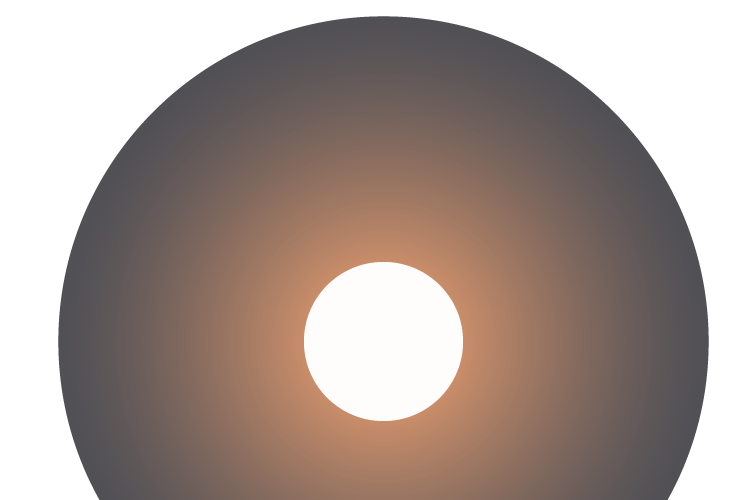

Travel Time



Parallax is a displacement or difference in the apparent position of an object viewed along two different lines of sight, and is measured by the angle or semi-angle of inclination between those two lines.[1][2] Due to foreshortening, nearby objects show a larger parallax than farther objects when observed from different positions, so parallax can be used to determine distances.
To measure large distances, such as the distance of a planet or a star from Earth, astronomers use the principle of parallax. Here, the term parallax is the semi-angle of inclination between two sight-lines to the star, as observed when Earth is on opposite sides of the Sun in its orbit.[a] These distances form the lowest rung of what is called "the cosmic distance ladder", the first in a succession of methods by which astronomers determine the distances to celestial objects, serving as a basis for other distance measurements in astronomy forming the higher rungs of the ladder.
Parallax also affects optical instruments such as rifle scopes, binoculars, microscopes, and twin-lens reflex cameras that view objects from slightly different angles. Many animals, along with humans, have two eyes with overlapping visual fields that use parallax to gain depth perception; this process is known as stereopsis. In computer vision the effect is used for computer stereo vision, and there is a device called a parallax rangefinder that uses it to find range, and in some variations also altitude to a target.
A simple everyday example of parallax can be seen in the dashboards of motor vehicles that use a needle-style mechanical speedometer. When viewed from directly in front, the speed may show exactly 60, but when viewed from the passenger seat, the needle may appear to show a slightly different speed due to the angle of viewing combined with displacement of the needle from the plane of the numerical dial.
Parallax is a displacement or difference in the apparent position of an object viewed along two different lines of sight, and is measured by the angle or semi-angle of inclination between those two lines.[1][2] Due to foreshortening, nearby objects show a larger parallax than farther objects when observed from different positions, so parallax can be used to determine distances.
To measure large distances, such as the distance of a planet or a star from Earth, astronomers use the principle of parallax. Here, the term parallax is the semi-angle of inclination between two sight-lines to the star, as observed when Earth is on opposite sides of the Sun in its orbit.[a] These distances form the lowest rung of what is called "the cosmic distance ladder", the first in a succession of methods by which astronomers determine the distances to celestial objects, serving as a basis for other distance measurements in astronomy forming the higher rungs of the ladder.
Parallax also affects optical instruments such as rifle scopes, binoculars, microscopes, and twin-lens reflex cameras that view objects from slightly different angles. Many animals, along with humans, have two eyes with overlapping visual fields that use parallax to gain depth perception; this process is known as stereopsis. In computer vision the effect is used for computer stereo vision, and there is a device called a parallax rangefinder that uses it to find range, and in some variations also altitude to a target.
A simple everyday example of parallax can be seen in the dashboards of motor vehicles that use a needle-style mechanical speedometer. When viewed from directly in front, the speed may show exactly 60, but when viewed from the passenger seat, the needle may appear to show a slightly different speed due to the angle of viewing combined with displacement of the needle from the plane of the numerical dial.